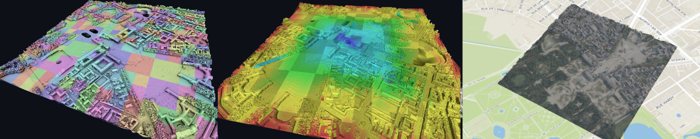

Sparkling Wasure
Out-of-core watertight surface reconstruction from LiDAR point clouds with Apache Spark.
International Conference on 3D Vision (3DV) · 2021 · LASTIG, IGN
paper (pdf) · code · dataset

Abstract
We present an out-of-core and distributed surface reconstruction algorithm which scales efficiently on arbitrarily large point clouds (with optical centres) and produces a 3D watertight triangle mesh representing the surface of the underlying scene. Surface reconstruction from a point cloud is a difficult problem and existing state of the art approaches are usually based on complex pipelines making use of global algorithms (i.e. Delaunay triangulation, graph-cut optimisation). For one of these approaches, we investigate the distribution of all the steps (in particular Delaunay triangulation and graph-cut optimisation) in order to propose a fully scalable method. We show that the problem can be tiled and distributed across a cloud or a cluster of PCs by paying a careful attention to the interactions between tiles and using the Spark computing framework. We confirm the efficiency of this approach with an in-depth quantitative evaluation and the successful reconstruction of a surface from a very large data set which combines more than 350 million aerial and terrestrial LiDAR points.
Code
Sparkling Wasure is a simplified version of the method, fine-tuned for the LiDAR HD dataset to run on a single computer. It produces a georeferenced mesh with levels of detail in 3D Tiles format, directly viewable in iTowns or Cesium.
github.com/lcaraffa/sparkling-wasure
GNU GPL v3 · experimental / research code · Docker · 8 GB RAM · no GPU.
News
- 2021-12-10 — Project page online.
References
@inproceedings{caraffa:hal-03380593,
TITLE = {Efficiently Distributed Watertight Surface Reconstruction},
AUTHOR = {CARAFFA, Laurent and Marchand, Yanis and Br{\'e}dif, Mathieu and Vallet, Bruno},
URL = {https://hal.archives-ouvertes.fr/hal-03380593},
BOOKTITLE = {2021 International Conference on 3D Vision (3DV)},
ADDRESS = {London, United Kingdom},
YEAR = {2021},
MONTH = Dec,
}@inproceedings{caraffa:hal-02535021,
TITLE = {Tile & Merge: Distributed Delaunay Triangulations for Cloud Computing},
AUTHOR = {CARAFFA, Laurent and Memari, Pooran and Yirci, Murat and Br{\'e}dif, Mathieu},
URL = {https://hal.archives-ouvertes.fr/hal-02535021},
BOOKTITLE = {IEEE Big Data 2019},
ADDRESS = {Los Angeles, United States},
YEAR = {2019},
MONTH = Dec,
DOI = {10.1109/BigData47090.2019.9006534},
}